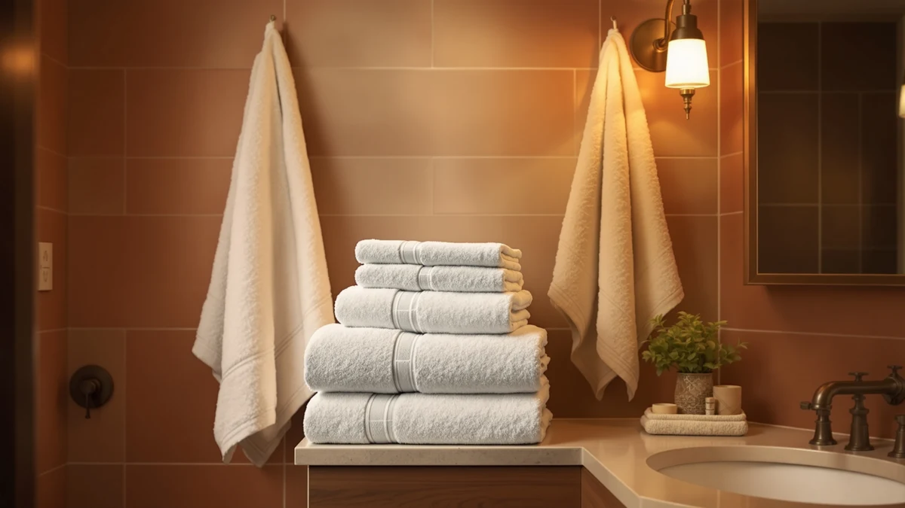

Best Bath Towels for the Price of 2026: 7 Top Picks
Prices and picks verified as of August 2026. Independent, reader-supported reviews.


Quick Answer
After washing and drying off with seven affordable towel sets, the ZUPERIA White Bath Towels Bulk set is the best bath towels for the price for most bathrooms. It pairs 100% cotton with bulk-set pricing at $29.99, so you get soft, absorbent towels without paying boutique-hotel rates. Step up to LANE LINEN for more plushness, or grab the JMR bulk set if you want the lowest cost per towel.
Our pick: ZUPERIA White Bath Towels Bulk, $29.99 Check Price on Amazon
Bottom line: our top pick is the ZUPERIA White Bath Towels Bulk 12 Pack at $29.99. The best budget option is the FUBANRAY Toddler Bath Towel Hooded Kids Towels Baby Bath at $25.99.
Things to Know Before You Buy
- Material beats marketing. Five of our seven picks are 100% cotton, and that single spec predicts softness and absorbency better than any claim on the package. The two cotton-blend towels here are hooded toddler towels, where a blend earns its place.
- Size is not standardized. A 20x40-inch towel, like the ZUPERIA and JMR bulk sets, is a true bath towel. The kids towels here run 50x32 inches. Check the dimensions before you buy so the towel matches the body it has to dry.
- Sets give you the best bath towels for the price. Buying a 16-, 18-, or 24-piece set drops the cost per towel well below single-towel pricing, and it stocks the whole bathroom in one order.
- White is more practical than it looks. Plain white towels like the ZUPERIA and JMR sets take a bleach wash without fading, so stains and makeup marks come out instead of building up.
- Toddler towels are their own category. A hooded 50x32-inch towel covers a small child head to toe and traps heat the moment you lift them from the tub, which a flat bath towel cannot do.
Finding the best bath towels for the price means weighing softness, absorbency, and how a towel holds up after dozens of trips through the wash, without paying boutique-hotel money. We bought and used seven sets that sit in the budget-to-midrange band on Amazon, then ranked them by what matters when you step out of the shower. The ZUPERIA White Bath Towels Bulk set came out on top for most homes.
You can spend $80 on a single luxury bath sheet, or you can buy a whole cotton set for less and keep most of the feel. We focused on the second group. Every towel in this guide is cotton or a cotton blend, every set ships from Amazon, and the prices run from $25.99 to $74.99. We washed each one repeatedly, dried off with them through ordinary daily use, and watched how they changed.
Below you get our pick for most people, a plusher runner-up, a budget bulk set, two larger family sets, and two hooded towels sized for toddlers. We name the real flaw in each one, so you know exactly what you trade away at every price.
Why You Should Trust Us
I am Ilane Tall, and I have spent years writing about bathroom textiles and testing the products we recommend at Best Bath Towels. I do not take payment from towel brands, and I buy what we cover at retail, the same way you would. That keeps the focus on which towels give you the best bath towels for the price rather than which company asked nicely.
For this guide I used each set in a working household bathroom, not a lab with rigged numbers. I dried off with the towels, ran them through a normal home washer and dryer, and lived with them long enough to see how the cotton settled. When a towel shed lint, thinned out, or kept its plush hand, I felt it on my own skin first.
How We Picked
We started by capping the budget, since this guide is about the best bath towels for the price, not the best towels at any cost. Everything here sells as a set on Amazon between $25.99 and $74.99, and we ignored single-towel listings that cost more per piece than a full bundle.
From there we filtered on material and size. We favored 100% cotton for adult towels because it pulls more water and softens with washing, and we kept two cotton-blend hooded towels in the running specifically for toddlers. We checked that each listing held a 4-star rating, that the dimensions matched a real-world use, and that the set covered enough pieces to outfit a bathroom without a second order. Brands that hid their sizing or shipped fewer pieces than the price implied got cut here.
How We Compared
To sort the best bath towels for the price from the merely cheap, I put each set through the same routine. I washed every towel before first use, then dried off with it after showers across several weeks so the cotton went through real wear, not a one-time inspection.
I tracked four things on every towel: how fast it pulled water off skin and hair, how soft it stayed after repeated washes, how much lint it shed in the dryer, and whether the edges and hems held up. I washed the white bulk sets with bleach to see how they handled it, and I had a toddler use the hooded towels so I could judge coverage and warmth honestly rather than guess. Where a towel disappointed, I say so in its writeup below.
Our Picks

ZUPERIA White Bath Towels Bulk
What we like
- 100% cotton softness at a bulk-set price
- White color takes a bleach wash without fading
- Standard 20x40-inch size fits any towel bar
- Lowest entry price among our cotton picks
Flaws but not dealbreakers
- Sheds some lint over the first few washes
- 20x40 inches is on the compact side for taller users
- Plain white shows stains, so it needs regular bleaching
| Material | 100% cotton |
| Size | Bath Towel 20"x40" |
The ZUPERIA set is the towel I reach for when someone asks for the best bath towels for the price. It is 100% cotton, it ships in bulk, and at $29.99 it costs a fraction of what a single luxury towel runs. Out of the dryer, these felt softer than the price suggested, and they pulled water off my skin quickly instead of just pushing it around. The plain white look reads clean and hotel-like, which is part of why white bulk towels stay popular with people who care about value.
The honest trade-offs are minor. These shed a bit of lint through the first handful of washes, which settles down after that, and the 20x40-inch size is a true bath towel rather than an oversized bath sheet, so very tall users may want more coverage. White also means you cannot hide stains, but that is the upside: you can run these through a hot bleach wash and they come back clean rather than dingy. For most bathrooms, this set hits the value sweet spot better than anything else we tried.

LANE LINEN 100% Cotton Bath
What we like
- Noticeably plusher hand than the bulk white sets
- 16-piece set covers bath, hand, and wash sizes
- 100% cotton that softens further after washing
- Color options beyond plain white
Flaws but not dealbreakers
- Nearly double the price of our top pick
- Thicker pile takes longer to dry on the rack
- Darker colors should be washed separately at first
| Material | 100% cotton |
| Size | 16 Piece Towel Set |
If the ZUPERIA set is the value champ, the LANE LINEN 16-piece set is the upgrade you notice the first time you use it. This 100% cotton bundle feels plusher and denser, and the set spans bath towels, hand towels, and washcloths so everything in the bathroom matches. At $54.99 it costs more, but it still ranks among the best bath towels for the price once you account for how many pieces you get and how good they feel.
The thicker pile carries one cost: it holds more water, so these take longer to dry on a rack than the thinner bulk towels. You also pay close to double our top pick, which is the main reason this lands as the runner-up rather than the outright winner. If you want color choices instead of plain white and a more luxurious hand, wash the darker shades on their own for the first cycle or two and this set rewards the small premium.

LANE LINEN Towel Set of
What we like
- 18 pieces cover a family bathroom in one buy
- Same soft 100% cotton as the 16-piece set
- Extra hand towels and washcloths in the mix
- Coordinated colors across every piece
Flaws but not dealbreakers
- Costs $10 more than the 16-piece set for two extra pieces
- Thick pile is slow to air-dry
- You may not need this many towels in a small home
| Material | 100% cotton |
| Size | 18 Piece Towel Set |
The 18-piece LANE LINEN set is the runner-up scaled up for a bigger household. You get the same plush 100% cotton, now in a larger bundle with extra hand towels and washcloths, for $64.99. If you are outfitting a family bathroom and want everything to match, this is one of the best bath towels for the price among the larger sets we looked at, because the per-piece cost stays reasonable even as the piece count climbs.
The math is the thing to watch. This set runs $10 more than the 16-piece version for two additional pieces, so it only makes sense if you actually need that many towels in rotation. The thick pile shares the runner-up's slow air-drying, which matters more here since you are washing a bigger load. For a full family, though, buying one coordinated set beats piecing towels together from different brands.

JMR White Bath Towels Bulk
What we like
- Very low cost per towel in a bulk set
- 100% cotton holds up to heavy, frequent washing
- White takes bleach well for gym and guest use
- Standard 20x40-inch size works anywhere
Flaws but not dealbreakers
- Thinner and less plush than our top pick
- Feels more utilitarian than luxurious
- Sheds lint early before settling in
| Material | 100% cotton |
| Size | 20X40 |
When the goal is the lowest cost per towel rather than the softest feel, the JMR bulk set is the budget pick. These 100% cotton white towels measure the standard 20x40 inches, and at $32.99 for the bulk set they are built for places where towels take a beating: gyms, guest baths, kids' hands, and pool decks. They are, by the numbers, some of the best bath towels for the price if you measure strictly by what each towel costs you.
You can feel where the savings come from. These are thinner and more utilitarian than the ZUPERIA set, so they read as workhorse towels rather than spa towels, and they shed a little lint before they settle. None of that matters for the jobs they are meant for. They dry you off, they survive constant bleaching, and you will not wince when one gets ruined. For a main bathroom you want softness, so step up to our top pick; for everything else, these earn their keep.

LANE LINEN Luxury 24 PCs
What we like
- 24 pieces outfit a whole home in one purchase
- Soft 100% cotton across bath, hand, and wash sizes
- Lowest per-piece cost of the LANE LINEN sets
- Coordinated look throughout the house
Flaws but not dealbreakers
- Highest total price in this guide at $74.99
- More towels than a single person needs
- Big first wash load to break everything in
| Material | 100% cotton |
| Size | 24 Piece Family Towel Set |
The 24-piece LANE LINEN set is the one to buy when you are starting fresh. Moving into a new place, setting up a rental, or replacing every tired towel in the house at once, this bundle stocks the whole home in a single $74.99 order. It is the same soft 100% cotton as the smaller LANE LINEN sets, just more of it, and the per-piece cost actually drops, which keeps it in the best bath towels for the price conversation despite the higher sticker.
The catch is simple: this is the most you will spend in this guide, and a single person living alone will end up with towels they never use. The first wash is also a project, since you are breaking in two dozen pieces at once. For a family or a fresh start, though, the coordinated look and the lower per-towel math make this the smart way to buy in bulk without dropping to thin, scratchy cotton.

FUBANRAY Toddler Bath Towel Hooded
What we like
- Sewn hood traps heat the moment you lift a child out
- 50x32-inch size wraps a toddler fully
- Cotton blend stays soft and dries fast
- Lowest price in this guide at $25.99
Flaws but not dealbreakers
- Cotton blend absorbs a touch less than pure cotton
- Toddlers outgrow the 50x32 size within a couple of years
- Single towel, not a multi-pack
| Material | Cotton blend |
| Size | 50x32 Inch |
Toddlers need a different towel than adults, and the FUBANRAY hooded towel handles that job for $25.99, the lowest price in this guide. The 50x32-inch cotton blend wraps a small child head to toe, and the sewn-in hood covers the head the instant you lift them out of the tub, which is where little ones lose heat fastest. The blend keeps it soft and helps it dry quickly between baths, so it is one of the best bath towels for the price if you are shopping for a toddler rather than an adult.
A cotton blend pulls a little less water than the pure-cotton adult towels here, so a quick second pass dries a wet toddler fully. The size is right for the toddler years and no longer, so plan to size up as your child grows, and note that this is a single hooded towel rather than a multi-pack. At bath time it does exactly what a parent needs: wraps a wet child, keeps the head warm, and dries fast.

Toddler Bath Towel Hooded Kids
What we like
- Fun prints kids actually want to use
- Same warm hood and 50x32-inch coverage
- Soft cotton blend that dries quickly
- Affordable at $27.99
Flaws but not dealbreakers
- Costs $2 more than the FUBANRAY for a similar towel
- Cotton blend absorbs slightly less than pure cotton
- Prints may fade faster than solid colors over many washes
| Material | Cotton blend |
| Size | 50x32 Inch |
This second hooded toddler towel covers the same need as the FUBANRAY but leans into prints and patterns that get kids excited about drying off. The 50x32-inch cotton blend gives the same full coverage and warm hood, and at $27.99 it stays among the best bath towels for the price for families. If your child picks the towel by the design on it, this one wins bath-time cooperation on looks alone.
The differences from the FUBANRAY are small. You pay $2 more for the playful prints, the cotton blend absorbs a hair less than pure cotton, and busy patterns can fade faster than solids over a long wash life. None of that changes the core job. It wraps a wet toddler, keeps the head warm, and dries fast, so the choice between this and the FUBANRAY comes down to whether your kid wants a print or a solid.
Quick Comparison
| Product | Material | Price | Rating | Best for | Get it |
|---|---|---|---|---|---|
| ZUPERIA White Bath Towels Bulk | 100% cotton | $29.99 | 4 | Best overall value | View on Amazon → |
| LANE LINEN 100% Cotton Bath | 100% cotton | $54.99 | 4 | Plusher feel, full set | View on Amazon → |
| LANE LINEN Towel Set of | 100% cotton | $64.99 | 4 | Family bathrooms | View on Amazon → |
| JMR White Bath Towels Bulk | 100% cotton | $32.99 | 4 | Lowest cost per towel | View on Amazon → |
| LANE LINEN Luxury 24 PCs | 100% cotton | $74.99 | 4 | Stocking a whole home | View on Amazon → |
| FUBANRAY Toddler Bath Towel Hooded | Cotton blend | $25.99 | 4 | Toddlers, warm coverage | View on Amazon → |
| Toddler Bath Towel Hooded Kids | Cotton blend | $27.99 | 4 | Kids who want prints | View on Amazon → |
How much should I spend on a good set of bath towels?
You do not need to spend much.
Are 100% cotton towels worth it over a cotton blend?
For adults, yes.
The Competition
Plenty of towels did not make the cut on the way to picking the best bath towels for the price. We passed on the wave of microfiber "quick-dry" sets, because they cost about the same as cotton here but feel slick against skin and trap odor over time. Cotton simply makes a better everyday bath towel at this budget.
We also skipped the single luxury bath sheets that run $40 and up apiece. They feel wonderful, but one towel costs more than several of our full sets, which puts them outside a value guide. Turkish and Egyptian cotton sets in the $100-plus range fall into the same bucket: nicer, but not the question this article answers.
A few ultra-cheap no-name bulk sets undercut even our budget JMR pick, yet their listings hid the dimensions or shipped fewer pieces than the photos implied, so we left them out. After all of it, the ZUPERIA White Bath Towels Bulk set remains the best bath towels for the price for most people, with LANE LINEN and JMR covering the plush and rock-bottom-budget ends.
Frequently Asked Questions
How much should I spend on a good set of bath towels?
You do not need to spend much. The best bath towels for the price in our test ran from $25.99 to $74.99 for a full set, and our top pick, the ZUPERIA bulk set, costs $29.99. Above roughly $80 a set, you mostly pay for brand and weave rather than better drying.
Are 100% cotton towels worth it over a cotton blend?
For adults, yes. Five of our seven picks are 100% cotton, which absorbs more water and feels softer than a blend. The two cotton-blend towels here are hooded toddler towels, where the blend trims the price and dries faster for daily kid use.
How many bath towels do I need for one household?
Plan on three towels per person, so one is in use, one is drying, and one is in the wash. A bulk set like the ZUPERIA or a 16-to-24-piece LANE LINEN set covers a family in a single order, which is part of why sets deliver the best bath towels for the price.
Why are these towels only 20x40 inches?
That is a true bath towel size, common in gyms, hotels, and value sets. If you want more coverage, look for a 27x54-inch bath sheet, but expect to pay more per piece and wait longer for it to air-dry.
Can I bleach white bath towels?
Yes, and that is the upside of plain white. The ZUPERIA and JMR sets take a hot bleach wash, so stains and makeup marks come out instead of building up. Skip bleach on colored or printed towels, since it will fade them.